01Soups
Soups & swallows
Slow soups and the doughs you scoop them with
- Fufu & light soup
- Banku & grilled tilapia
- Kenkey & fried fish
- Groundnut soup
- Ampesi & kontomire stew
- Tuo zaafi & ayoyo soup
Ghanaian chop bar · Osu, Accra · since 2014
Big pots of Ghanaian home food, cooked the long way by five cooks from five corners of the country. Eat in the yard, or order for pickup and delivery across Accra.

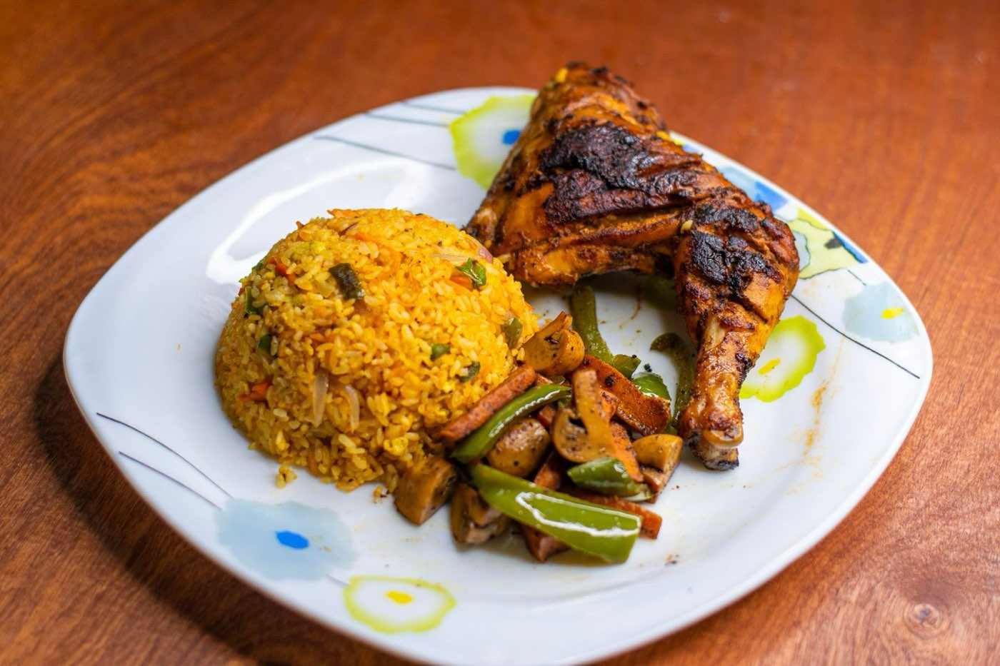
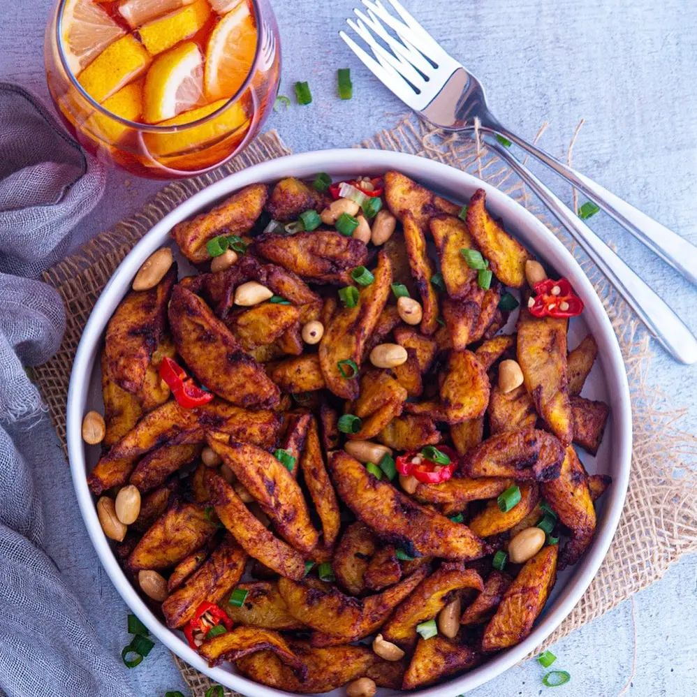
Who we are
We pound fufu 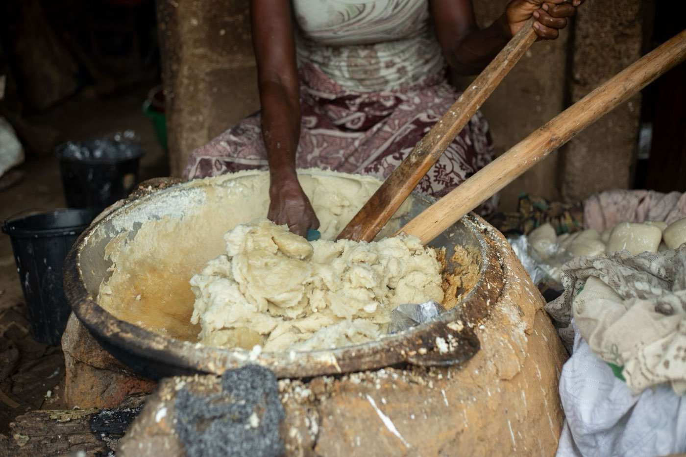 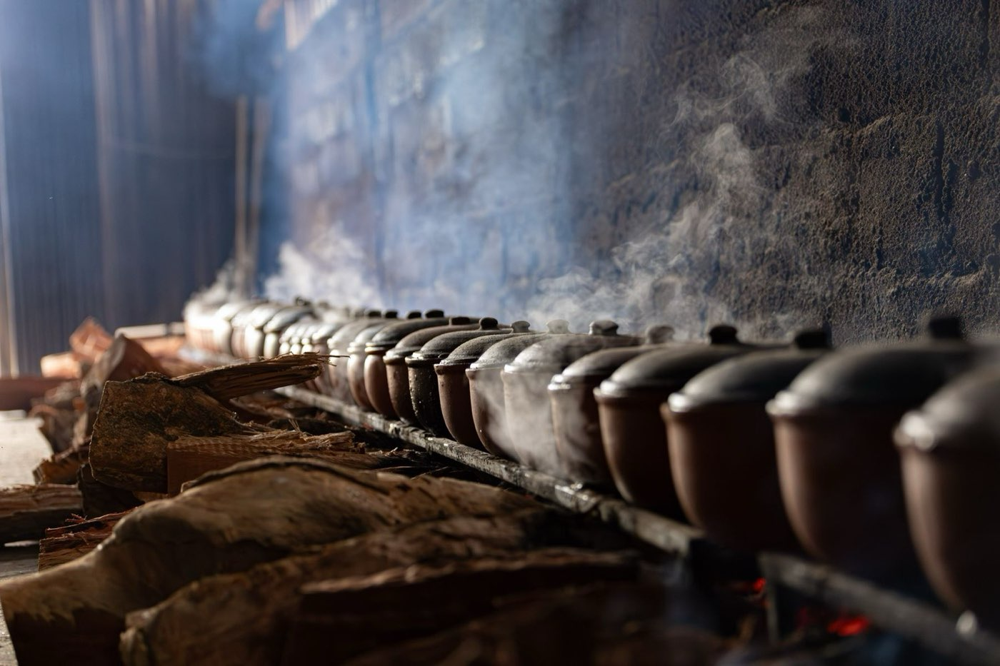
Akwaaba. You are welcome here.
Read our storyHow it works
Eat in the yard, collect it boxed and warm, or have it on a motorbike to your door. Here is the day.
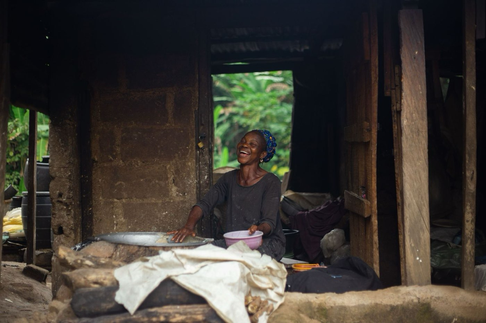
01Light soup goes on first. By seven the waakye is ready and the kenkey is out of the steamer.
 02
02Order at the counter or online. Before 11:00 for noon pickup, or any time for delivery in about 40 minutes.
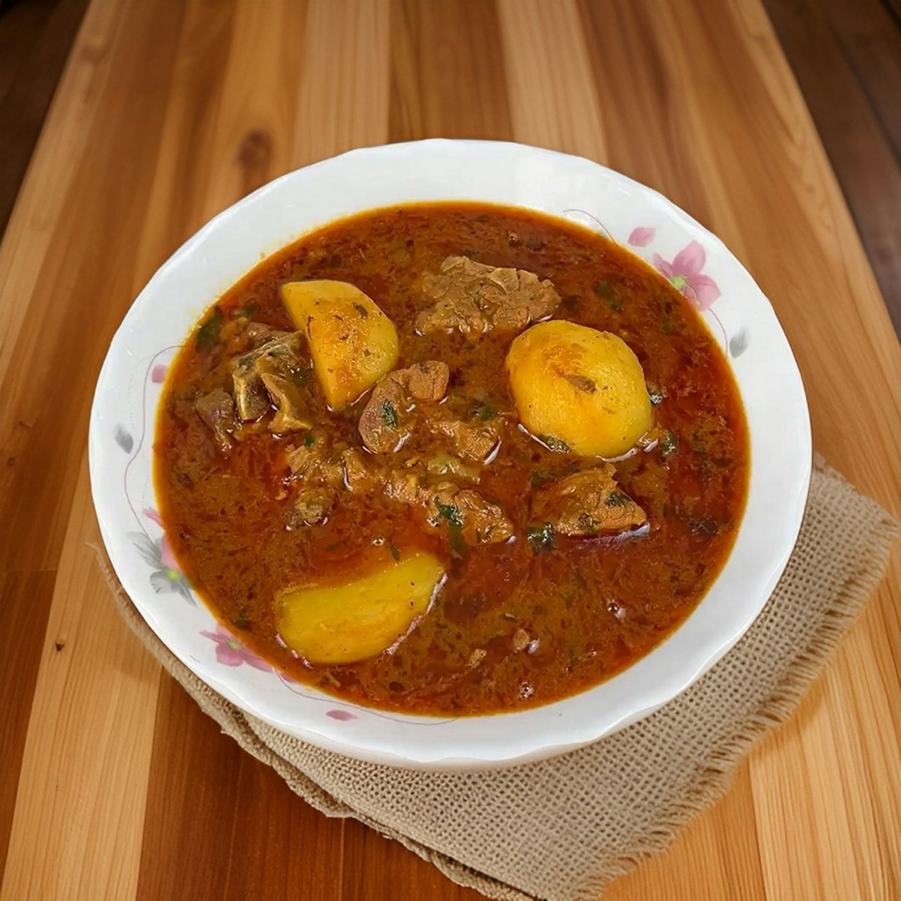
03Wash your hands at the basin, take a seat in the yard, and use your right hand. Spoons are allowed.
Pot of the day
Like every good chop bar, we cook one special pot each day of the week. When it is gone, it is gone.
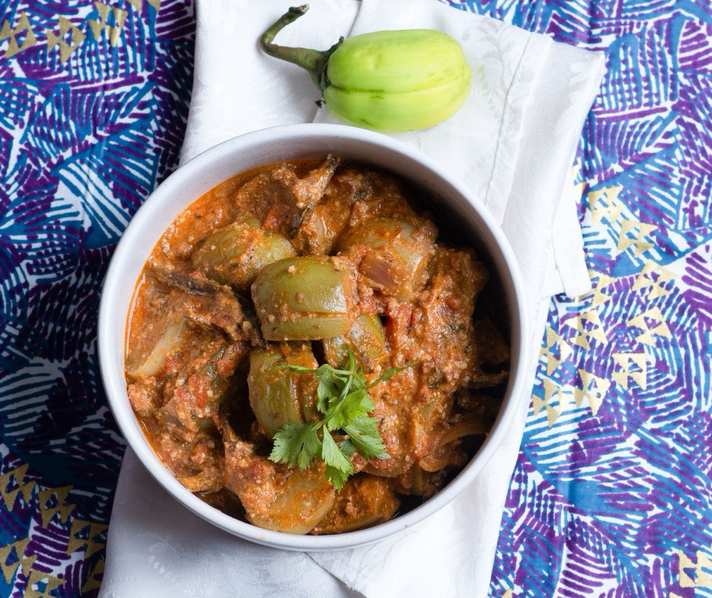
SundayToday
The after-church soup. Groundnut paste and chicken, with soft rice balls and a free second scoop.
From 12:00GH₵ 110

MondayToday
A gentle start to the week. Boiled yam and plantain with cocoyam leaf stew and egg.
From 11:00GH₵ 75
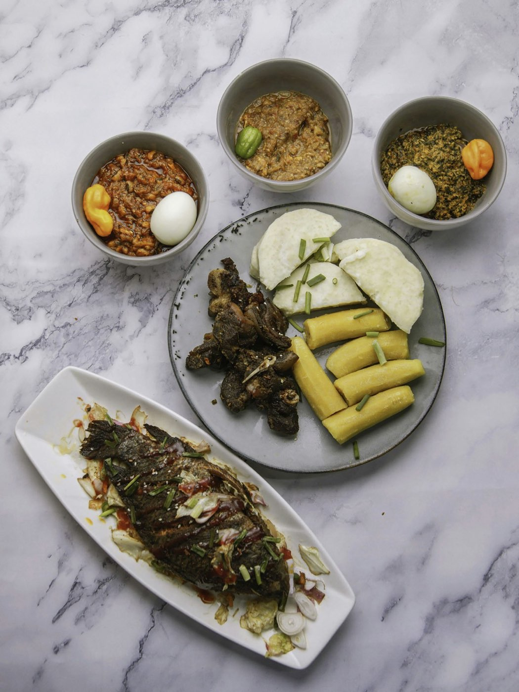
TuesdayToday
Okra stewed with fish and crab in palm oil. Slippery, rich and made for banku.
From 11:00GH₵ 110

WednesdayToday
Palm nut soup. The nuts are boiled and pounded here on Tuesday night, and the soup cooks all morning.
From 12:00GH₵ 125
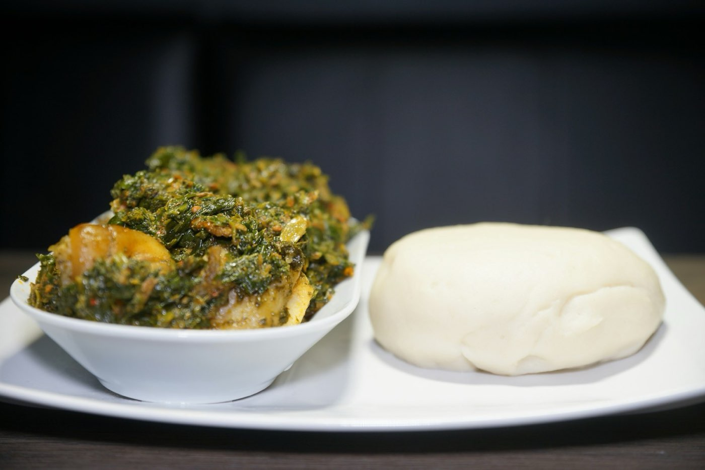
ThursdayToday
Northern day. Abdul-Rahman makes TZ with ayoyo soup and a small number of guinea fowl.
From 11:00GH₵ 85
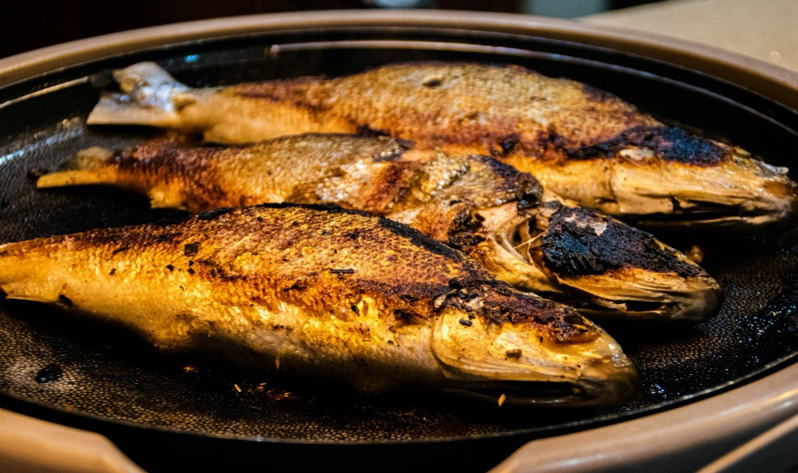
FridayToday
Ga kenkey steamed overnight, with fried fish, shito and raw pepper. Ready from breakfast.
From 07:00GH₵ 80
SaturdayToday
Fufu Saturday. Pounded by hand in the yard from eleven, while the light soup has been going since six.
From 11:00GH₵ 120
Fan favourites
By the numbers
6 hrs
Light soup simmers before the first bowl goes out
1,400
Balls of fufu pounded by hand every week
26
Dishes from every region of Ghana
0
Stock cubes. We make stock from goat bones and smoked fish
Ideas & recipes
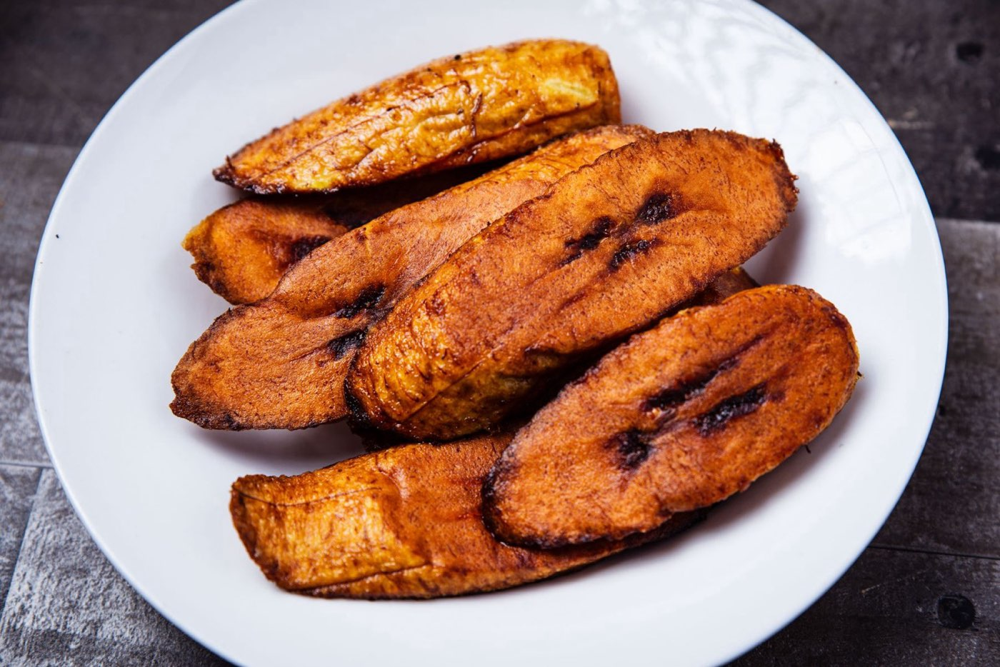
35 minStreet food · Easy
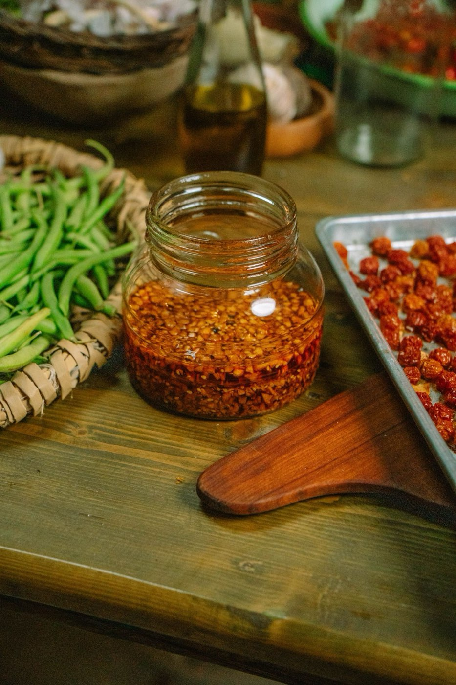
1 h 30Pantry · Medium
 1 h 15
1 h 15Everyday · Easy
 1 h 15
1 h 15Party food · Medium
 45 min
45 minDrinks · Easy
Sunday soups · Medium
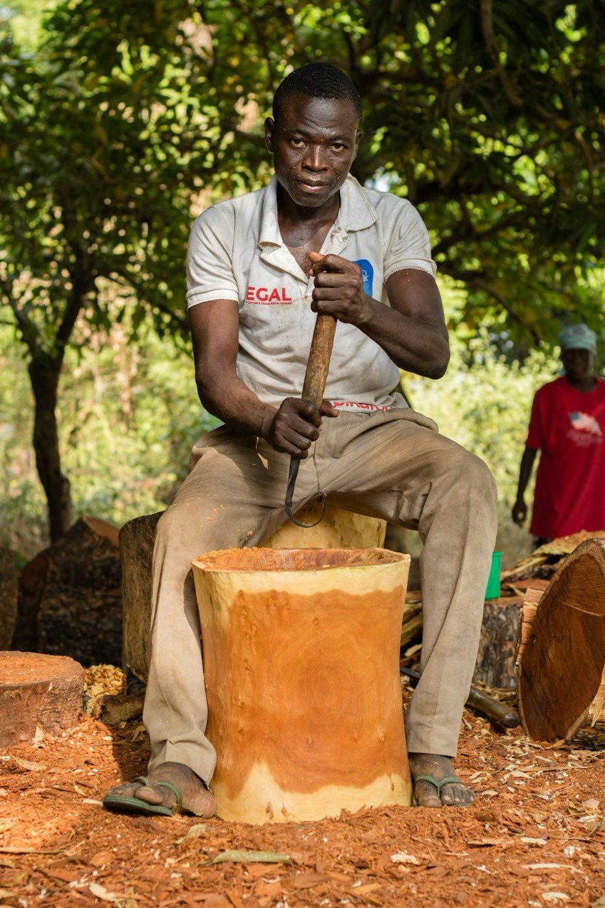
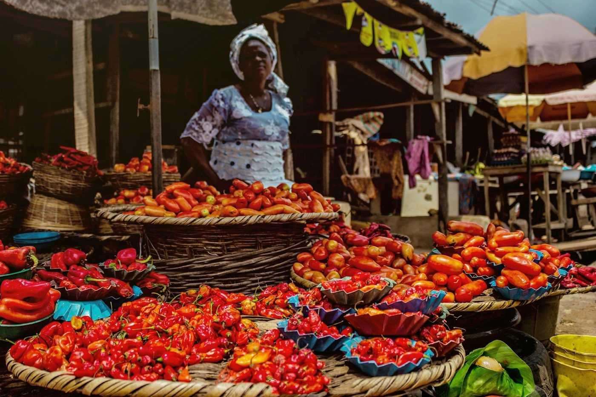
Since 2014
Efua Boateng opened Asanka with a single pot of light soup on a borrowed table in Osu. Twelve years on there are five cooks, a yard of long tables and a queue on Saturdays, but the soup is still her grandmother's.
An asanka is the ridged clay bowl every Ghanaian kitchen uses to grind pepper. It is where the flavour starts, which is why we named the place after it.
Find our shito at
Order ahead
Orders placed before 11:00 are boxed and waiting from noon. Pay with Mobile Money, card or cash at the counter.